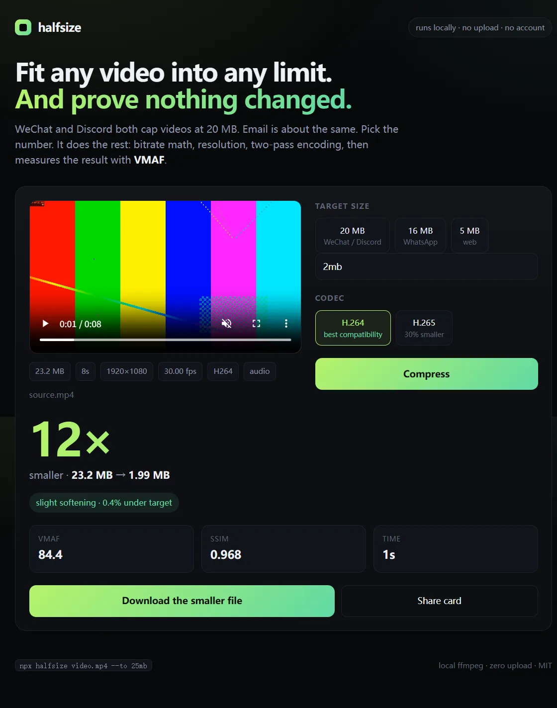

halfsize / Offline
Compress a video without uploading it
Every “free online video compressor” is a server that receives your file. For a passport scan, an unreleased product demo, or a recording of a child, that is a bad trade for saving five minutes. halfsize runs FFmpeg on your own machine: nothing is uploaded, there is no account, and there is no quota.
$ npx halfsize private-demo.mp4 --to 20mb
halfsize 0.1.10
private-demo.mp4
136 MB 60s 1920x1080 30.00 fps h264
target 20.0 MB
plan H.264 1280x720 2.46 Mbps audio 128 kbps 2-pass
scale 1920x1080 → 1280x720
output private-demo.20mb.mp4
measuring quality done in 8s
136 MB → 19.45 MB 7.0x smaller 2.7% under target
VMAF 88.3 SSIM 0.971 slight softening
Nothing left this machine.What “offline” actually means here
| Step | Online compressor | halfsize |
|---|---|---|
| Your file | uploaded to a server | stays on disk |
| Account | often required | none |
| Quota | 2–3 files per day, then pay | unlimited |
| Watermark | on the free tier | never |
| Quality report | “high quality” badge | measured VMAF and SSIM |
| Works without internet | no | yes, after install |
| Cost | subscription | MIT, free |
The one thing that does touch the network is the first npx halfsize: npm downloads the
package, and the package fetches a static FFmpeg binary for your platform. After that, encoding is local.
You can confirm it yourself by disconnecting the network and running the same command again.
Prefer a UI? The app is local too
The web interface is served from 127.0.0.1 by the same process. It is not a hosted site —
the page and the video never leave your computer.
$ npx halfsize --web
halfsize web UI on http://127.0.0.1:4174
Drag a file in, pick a target, get the size and the quality score. All local.
Why not just run FFmpeg by hand?
You can, and halfsize is a thin layer over it. The hard part is the arithmetic: for a target size you need a bitrate budget after audio and container overhead, and you need to decide whether dropping to 720p looks better than keeping 1080p at half the bitrate. Then you have to check whether the result actually fits and how much quality it cost. That is the part the tool automates.
$ npx halfsize video.mp4 --to 20mb --dry-run
plan H.264 1280x720 2.46 Mbps audio 128 kbps 2-pass → ~19.4 MBMeasured quality, not marketing
60-second 1080p30 source at 18 Mbps, encoded locally on a laptop:
| Target | Output | Resolution | VMAF | Verdict |
|---|---|---|---|---|
| 20 MB | 19.45 MB | 1280×720 | 88.3 | slight softening |
| 16 MB | 15.59 MB | 960×540 | 84.8 | slight softening |
| 10 MB | 9.77 MB | 960×540 | 82.9 | slight softening |
| 5 MB | 4.93 MB | 640×360 | 72.0 | visible loss |
Privacy is not the same as magic. A 10-minute video squeezed into 20 MB has 0.25 Mbps and will look soft no matter which tool does it. If quality matters, cut the clip first, then compress.
Where people use it
- Client demos and internal recordings that cannot go to a third-party server
- Government, school and job portals with a hard 20 MB limit
- Machines on a restricted network where uploads are blocked
- Large batches where a per-file web uploader is unusable
FAQ
Does it phone home?
No analytics, no telemetry, no update check. The source is on GitHub; you can read it or run it behind a firewall.
Does it need Node.js?
Yes, Node.js 18 or newer. FFmpeg itself is bundled, so you do not need to install or configure it.
Which platforms?
Windows 10/11, macOS and Linux. The same command works on all three.
Can I use it in a script or CI?
Yes. --json prints a machine-readable result and --dry-run prints the plan without encoding.
Is the web UI a cloud service?
No. npx halfsize --web starts a server on 127.0.0.1 that only your machine can reach.